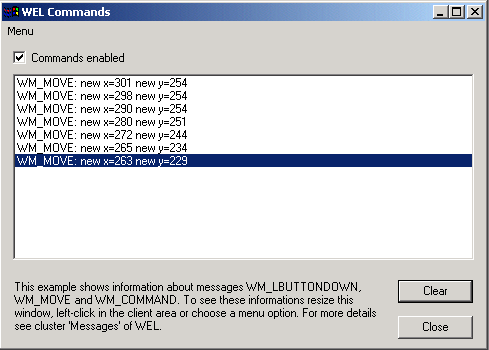

Commands Sample

Compiling
To compile the example:
- Launch EiffelStudio.
- Select Use existing Ace (control file) and click OK.
- Browse to Eiffel50\examples\wel\commands\.
- Choose Ace.ace
- Choose the directory where the project will be compiled, by default the same directory containing the Ace file.
If you select another directory than the default one, please copy icons
(*.ico) and resource files (*.rc) from the
default directory (the one containing the Ace file) to the new
one.
- Click OK.
Running
After launching the program, you will see a window displayed with a similar appearance to the one illustrated above. Please follow the instructions displayed in the window.
Under the Hood
MAIN_DIALOG inherits WEL_MAIN_DIALOG which provides the feature
put_command, used to associate a WEL_COMMAND to a Windows message received by the window.
A WEL_COMMAND contains a deferred feature, execute which is executed when the
command is fired. SHOW_COMMAND_INFORMATION, SHOW_MOUSE_BUTTON_INFORMATION and
SHOW_MOVE_INFORMATION all inherit WEL_COMMAND.
Note: execute has an argument of type ANY which is used to pass any additional information required.
This sample contains the following classes: